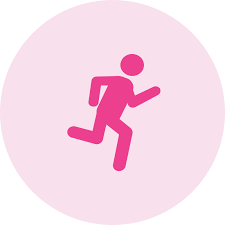

Como se previnir?

Pratique atividade física
Praticar pelo menos 150 minutos de exercícios moderados por semana (como caminhada rápida ou corrida leve) ajuda a regular os níveis de estrogênio.
Alimenta-se bem
Priorizar o consumo de alimentos de origem vegetal (frutas, legumes, verduras, grãos integrais e leguminosas) e evitar alimentos ultraprocessados e carnes processadas.
Realize exames regularmente
É a estratégia mais eficaz para descobrir o câncer de mama em estágio inicial, permitindo tratamentos menos agressivos e taxas de cura superiores a 95%.